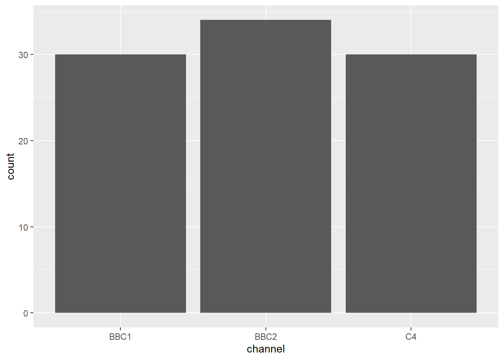
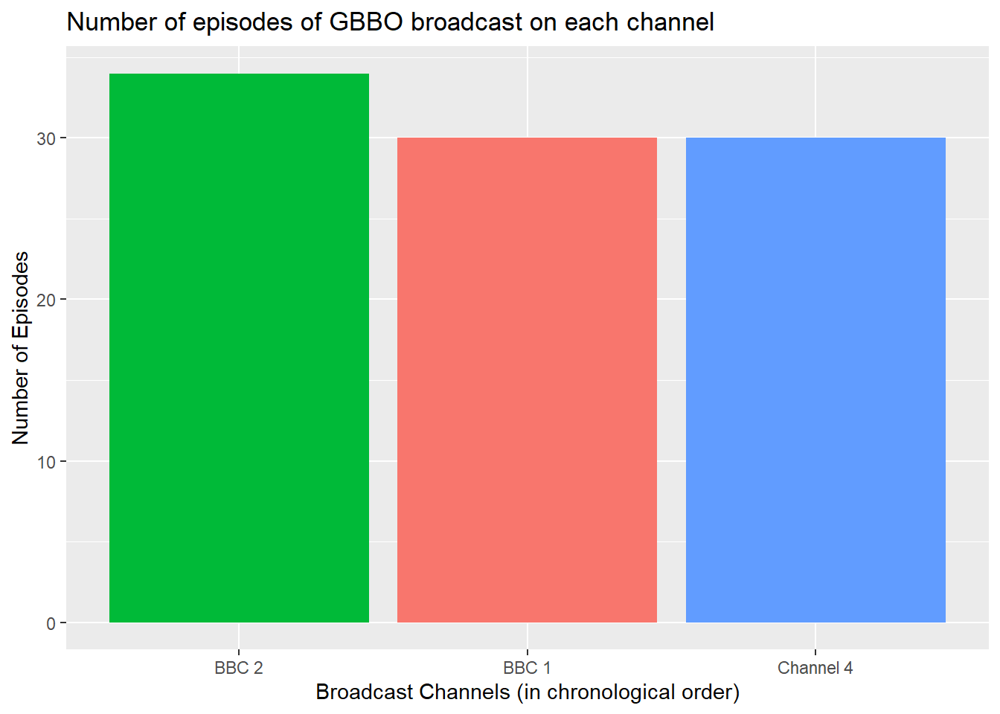

S1Y Lab 2
1 Visualizing Data
1.1 Intended Learning Outcomes
- Be able to create graphical summaries of data using the
ggplot2library
1.2 Visualising Data: Great British Bake Off (GBBO)
In this lab, we will revisit the Great British Bake Off dataset which we worked with in Lab 1. Refer to Lab 1 for a reminder of the dataset structure if you need to.
1.2.1 Reading data in
The file ratings_seasons_Lab2.csv contains data on the first 10 series (2010-2019) and includes all the additional variables we created in Lab 1. You can load the data in like Lab 1 below:
library(tidyverse)
ratings <- read_csv("https://raw.githubusercontent.com/Glasgow-Stats-L1-L2/S1Y_Data/main/ratings_seasons.csv")We can also read the ratings_seasons.csv file in locally to RStudio if we download a copy of the file onto our own device. You can find this file in the 'Lab 1' section on Moodle.
Once you have downloaded and saved the csv file to your device (it is usually a good idea to save data in the same place as your R script), we will then have to set the working directory (where your file is located).
In order to do this go to:
- Session > Set Working Directory > Choose Directory...
The file explorer will then open, and you can locate the folder your data is stored in. Once this has been found, select 'Open".
Once our working directory has been set, we now have to read our data into RStudio. We can do this using the following command
We will once again have to change the variables series, episode and channel to factors which we can do using the code below.
1.3 Building plots
There are multiple approaches to data visualisation in R; in this course we will use the popular package ggplot2, which is part of the larger tidyverse collection of packages. A grammar of graphics (the "gg" in "ggplot") is a standardised way to describe the components of a graphic. ggplot2 uses a layered grammar of graphics, in which plots are built up in a series of layers. It may be helpful to think about any picture as having multiple elements that sit semi-transparently over each other.
Figure 1 displays the steps to create a simple scatterplot using this layered approach. First, the plot space is built (layer 1); the variables are specified (layer 2); the type of visualisation (known as a geom) that is desired for these variables is specified (layer 3) - in this case geom_point() is called to visualise individual data points; a second geom is added to include a line of best fit (layer 4), the axis labels are edited for readability (layer 5), and finally, a theme is applied to change the overall appearance of the plot (layer 6).
Figure 1.1: Steps to create a layered plot
Importantly, each layer is independent and independently customisable. For example, the size, colour and position of each component can be adjusted. The use of layers makes it easy to build up complex plots step-by-step, and to adapt or extend plots from existing code.
Using the concept of building up a plot by layers, we will describe some specific plot types. Different types of data require different types of plots, so the following sections are organised by data type.
The ggplot2 cheat sheet is a great resource to help you find plots appropriate to your data, based on how many variables you're plotting and what type they are. The examples below all use the GBBO data, but each plot communicates something different.
We don't expect you to memorise all of the plot types or the methods for customising them, but it will be helpful to try out the code in the examples below for yourself, changing values to test your understanding.
1.4 Counting categories
1.4.1 Bar plot
If you want to count the number of things per category, you can use geom_bar(). You only need to provide an x mapping to geom_bar() because by default geom_bar() uses the number of observations in each group of x as the value for y, so you don't need to tell it what to put on the y-axis.

Notice that layers are added using the plus + symbol at the end of the previous line, not at the start of the next line. For example if you make this mistake:
...it will produce an empty 'base layer' and then an error like this:
## Error:
## ! Cannot use `+` with a single argument
## ℹ Did you accidentally put `+` on a new line?
- Inspect the code below and try running it layer by layer to figure out how things like the order of the columns and their labels change.
ggplot(ratings, aes(x = channel,
fill = channel)) +
geom_bar() +
labs(title="Number of episodes of GBBO broadcast on each channel")+ # adds a plot title
ylab("Number of Episodes")+ # adds an axis label
theme(legend.position = "none")+ # removes the legend
scale_x_discrete(
# change axis label
name = "Broadcast Channels (in chronological order)",
# change to chronological order
limits = c("BBC2", "BBC1", "C4"),
# change labels
labels = c("BBC 2", "BBC 1", "Channel 4")
)
- Copy and edit the code above to produce a bar plot showing the number of episodes in each series of GBBO
ggplot(ratings, aes(x = series,
fill = series)) +
geom_bar() +
labs(title="Number of episodes of GBBO broadcast in each series")+ # adds a plot title
ylab("Number of Episodes")+ # adds an axis label
xlab("Series")+ # adds an axis label
theme(legend.position = "none")+ # removes the legend
scale_x_discrete(
# change to categorical labels
limits = c("1", "2", "3", "4", "5", "6", "7", "8", "9", "10"),
# change labels
labels = c("1", "2", "3", "4", "5", "6", "7", "8", "9", "10")
)1.4.2 Column plot
If your data already have a column with the number you want to be the height of each bar or column, you can use geom_col() to plot it. Recall that the ratings data contains the variable viewers_7day which contains the number of viewers in the 7 days after each episode which we can plot as the height of each bar/column by setting y=viewers_7day. But what will we use to define where they are plotted on the x-axis?
After considering the values contained in the variable
seriesand/orepisodecomplete this statement:Neither the values in
seriesorepisodecan be used to definex=:
## # A tibble: 94 × 2
## series episode
## <fct> <fct>
## 1 1 1
## 2 1 2
## 3 1 3
## 4 1 4
## 5 1 5
## 6 1 6
## 7 2 1
## 8 2 2
## 9 2 3
## 10 2 4
## # ℹ 84 more rowsSo before we can create the column plot, we need to create a new variable:
- Run this code to create a new variable
ep_idwhich is the unique index indicating the chronological order of each episode (using therow_number()function and the fact that it's the same as the order it appears in theratingsdata).
Now we have the two variables we need to make the column plot.
- Inspect and run this code to produce the plot below.
ggplot(ratings, aes(x = ep_id, y = viewers_7day, fill = series)) +
geom_col() +
labs(title="7-Day Viewers across All Series/Episodes")+
ylab("Number of viewers (millions)")+ # adds an axis label
xlab("Episode Index")+ # adds an axis label
scale_fill_discrete(name="Series") # set the name of the legend 1.4.3 Test your understanding
Here is a small data table.
| country | population | island |
|---|---|---|
| Northern Ireland | 1,895,510 | Ireland |
| Wales | 3,169,586 | Great Britain |
| Republic of Ireland | 4,937,786 | Ireland |
| Scotland | 5,466,000 | Great Britain |
| England | 56,550,138 | Great Britain |
- What geom would you use to plot the population for each of the 5 countries?
- What mapping would you use?
- What geom would you use to plot the number of countries on each island?
- What mapping would you use?
1.5 One numerical variable
If you have a numerical variable, like the number of views 7 days after each broadcast, you can use geom_histogram() or geom_density() to show the distribution. Just like geom_bar() you are only required to specify the x variable.
1.5.1 Histogram
A histogram splits the data into "bins" along the x-axis and shows the count of how many observations are in each bin along the y-axis.
## `stat_bin()` using `bins = 30`. Pick better value with `binwidth`.Figure 1.2: Histogram of ratings.
You should always set the binwidth or number of bins to something meaningful for your data (otherwise you get an annoying message, like the one above). You might need to try a few options before you find something that looks good and conveys the meaning of your plot.
- Try changing the values of
binwidthandbinsbelow to see what works best.
# adjust width of each bar
ggplot(ratings, aes(x = viewers_7day)) +
geom_histogram(binwidth = 2)
# adjust number of bars
ggplot(ratings, aes(x = viewers_7day)) +
geom_histogram(bins = 5)Finally, the default style of grey bars is a bit boring, so you can change that by setting the fill and colour, as well as using scale_x_continuous() to update the axis labels.
- Adapt and run this code to control the appearance of the histogram

1.6 Grouped numerical variables
There are several ways to compare numerical data across groups. Which you choose depends on what point you are trying to make with the plot.
1.6.1 Subdividing distributions
In previous plots, we have used fill purely for visual reasons, e.g., we have changed the colour of the histogram bars to make them look nicer. However, you can also use fill to represent another variable so that the colours become meaningful.
Setting the fill aesthetic in the mapping will produce different coloured bars for each category of the fill variable, in this case issue_category.
ggplot(ratings, aes(x = viewers_7day, fill = channel)) +
geom_histogram(binwidth = 1,
color = "black")Figure 1.3: Histogram with categories represented by fill.
1.6.2 Violin plot
Another way to compare groups of continuous variables is the violin plot. This is like a density plot, but rotated 90 degrees and mirrored - the fatter the violin, the larger proportion of data points there are at that value.

Figure 1.4: The default violin plot gives each shape the same area. Set scale='count' to make the size proportional to the number of observations.
1.6.3 Boxplot
Boxplots serve a similar purpose to violin plots. They don't show you the shape of the distribution, but rather some statistics about it. The middle line represents the median; half the data are above this line and half below it. The box encloses the 25th to 75th percentiles of the data, so 50% of the data falls inside the box. The "whiskers" extending above and below the box extend 1.5 times the height of the box, although you can change this with the coef argument. The points show outliers -- individual data points that fall outside of this range.
Figure 1.5: Basic boxplot.
1.7 Two numerical variables
When you want to see how two numerical variables are related, set one as the x-axis and the other as the y-axis. For example, what if we want to see the changes in ratings over the episodes/series in chronological order.
1.7.1 Scatterplot
The function to create a scatterplot is called geom_point().
Figure 1.6: Scatterplot with geom_point().
- Edit and run the above code to join up the points in the scatterplot by adding the function
+ geom_lineand then modify the code further to remove the points
These plots show each individual episodes' ratings and are perhaps more detailed than we need. If we were just interested in looking at the ratings across series, then we could create summaries for each series and plot these.
- Examine and run this code to produce a lineplot of the average ratings for each series
avg_ratings <- ratings %>%
select(series, episode, viewers_7day) %>%
group_by(series) %>%
summarise(avg_viewers_7day = mean(viewers_7day)) %>%
ungroup()
ggplot(avg_ratings, aes(x = series, y = avg_viewers_7day, group=1)) +
geom_point() +
geom_line() +
ggtitle("Great British Bake Off Average Ratings")Because the x values in aes() are a factor, by default geom_line() treats each unique x value as a separate group and tries to connect points only inside each group. Setting group=1 in aes() ensures that all values are treated as one group (and therefore connected by lines using geom_line()).
1.8 Two numerical variables and a categorical variable
It is often the case that we are interested in relationships between more then two variables.
The code below illustrates how to build more complex graphical summaries, in this case number of viewers of the first and last episode in each series.
- You do not need to produce this plot but have a look and see if you can follow the code that is used to create it.
plot_data <- ratings %>%
select(series, episode, viewers_7day) %>%
group_by(series) %>%
filter(episode == 1 | episode == max(as.numeric(episode))) %>%
mutate(episode = recode(episode, "1" = "first", .default = "last")) %>%
ungroup()
ggplot(plot_data, aes(x = series,
y = viewers_7day,
color = episode,
group = episode
)) +
geom_point() +
geom_line() +
ggtitle("Great British Bake Off Finales Get More Viewers than Premiers") +
labs(color = "Episode")